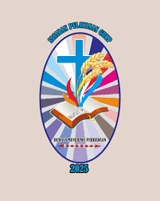
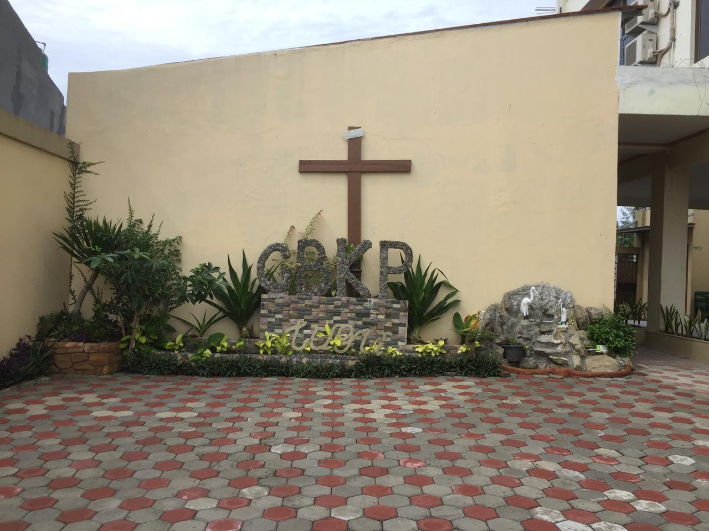
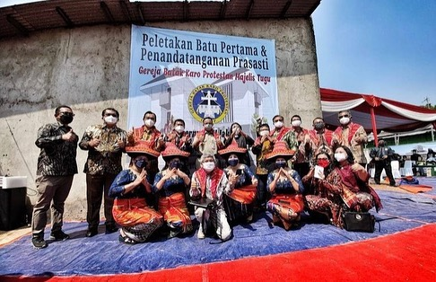
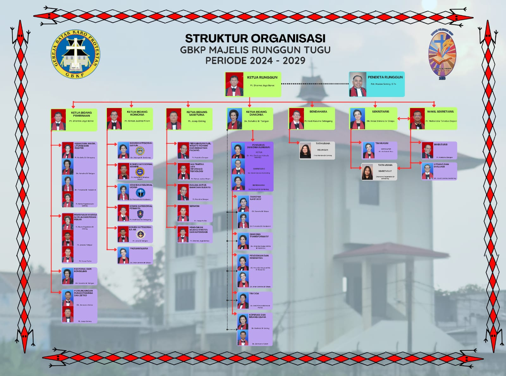

☰
Home
Koinonia
Paduan Suara
Saitun
Mamre
Moria
Permata
KAKR
Marturia
Perkabaran Injil, Wisata Rohani dan Kebaktian Padang
Multimedia dan Informasi Teknologi
Dialog Antar Iman dan Budaya
Sermon
Pendidikan Agama Kristen dan Katekhisasi
Diakonia
Karitatif
Transformatif
Pendidikan dan Kesehatan
Tim Doa
Koperasi dan Bidang Usaha
Sekretariat dan Bidang Penunjang
Inventaris
Litbang dan Evaluasi
Kesekretariatan
Keuangan
ORGANISASI
Search




×
Konten yang Diupload